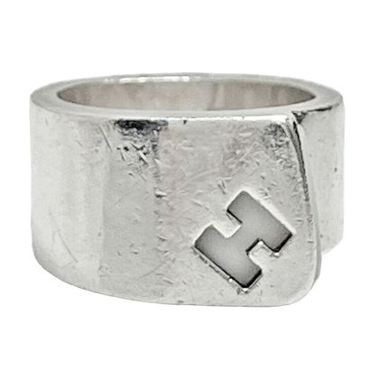
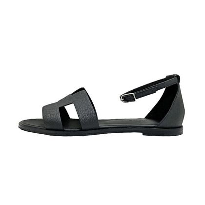
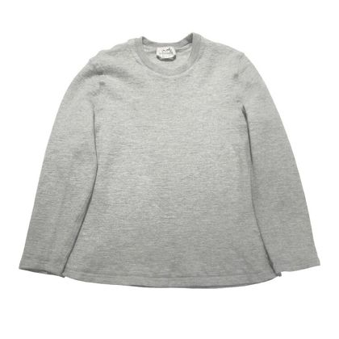

エルメスのバッグの選び方｜バーキン・ケリー・ピコタンなど定番モデルの違いと中古価格
エルメスのバッグを初めて選ぶ人向けに、バーキン・ケリー・ピコタンロック・エヴリン・ボリードの形と使い方の違い、サイズと素材の選び方、中古で確認するポイントを表で整理しました。
約3分で読めます
BRAND ENCYCLOPEDIA
HERMES
エルメス（HERMES）は、1837年にフランス・パリで創業したブランドです。
エルメスのバッグを初めて選ぶ人向けに、バーキン・ケリー・ピコタンロック・エヴリン・ボリードの形と使い方の違い、サイズと素材の選び方、中古で確認するポイントを表で整理しました。
約3分で読めます
エルメスを代表する2つのバッグ、バーキンとケリーの違いを、名前の由来・持ち方・開け閉め・サイズ・仕立て・中古価格の観点で比較しました。
約1分で読めます
ハイブランドの財布を初めて選ぶ人向けに、形と素材の選び方、ルイ・ヴィトン、エルメス、シャネル、ボッテガ・ヴェネタ、プラダ、グッチの定番モデルと中古価格の目安をまとめました。
約2分で読めます
予算10万円以下でハイブランドを選ぶなら何がいい？中古で見つけやすい財布・小物・アクセサリーの定番と、選び方のポイント、表示時点で10万円以下の販売中商品をまとめました。
約1分で読めます
世界中で愛されている高級ブランドである『エルメス』。バッグやスカーフは有名ですが、手帳やノートにも多くのファンがいることをご存知ですか？ 手 “エルメスの手帳やノートのおすすめ…
約8分で読めます
世界中で愛されるハイブランド『エルメス』（HERMES）。上質なレザーと品格のあるデザインで不動の人気を誇っています。 その中でも、財布の定 “エルメスのベアンは持つだけで幸せ…
約8分で読めます
確かな品質で世界から愛されているハイブランド『エルメス』。 バッグやスカーフが有名ですが、実はバングル・ブレスレットもとても人気があります。 “エルメスのバングルブレスでハード…
約7分で読めます
多くの著名人などが愛用していることから、世界的にも愛されているファッションブランド「エルメス」。 その魅力に惹かれる方は多く、性別や年齢を超 “エルメスの刻印には意味がある？製…
約8分で読めます
有名ブランド×カジュアルラインとして根強い人気のバッグといえば、エルメスのフールトゥ。 しかし、残念ながらこちらのフールトゥは2006年に廃 “エルメスのフールトゥ完全ガイド｜…
約6分で読めます
多くの女性が憧れるブランドの一つ「エルメス」。 そんなエルメスのロゴマークといえば「馬車」ですよね。 あのロゴを見るだけで「エルメスだ」と分 “エルメスのロゴの真の意味とは｜馬…
約5分で読めます
高級ファッションブランド エルメスに腕時計のラインナップがあることをご存じですか？ エルメスでは、現在いくつかのシリーズが発売されていますが “エルメスのクリッパーが愛される理…
約8分で読めます
大人の魅力を惹き付けるアイテムといえば、時計やネックレス、鞄を思い浮かべる方も多いはず。 もちろん、こういったアイテムも大人の魅力を取り入れ “エルメスのブレスレットで大人の魅…
約9分で読めます
ラグジュアリーなアイテムで世界中を虜にする一流ブランド『エルメス』。 その中でも、スカーフはエルメスらしい洗練された美しさが魅力的です。今回 “エルメスのスカーフのおすすめ15…
約8分で読めます
働くメンズにとって欠かせないのはネクタイ。 おしゃれなビジネスマンの中で、今、エルメスのネクタイが人気になっていますよね。 エルメスというと “エルメスのネクタイの人気TOP3…
約7分で読めます
女性らしい品格を感じさせるブランドといえば、「エルメス」の名が思い浮かぶ方も多いのではないでしょうか。 カバンや財布など、初めてのブランドは “【2020年最新】エルメスの時計…
約6分で読めます
エルメスというと、一番にバッグがイメージされますが、実は、アクセサリーもものすごく充実していますよね。 エルメスのネックレスは、お手頃な価格 “エルメスのネックレスのおすすめ7…
約5分で読めます
一流ブランドバッグの代名詞「エルメスのバーキン」。 海外セレブや著名人に愛用者が多く、自分には無縁のものと思っていませんか？ かたや、「○ “エルメスのバーキン(Birkin)…
約13分で読めます
高級ブランド・エルメスを代表するアイテムである「ケリーバッグ」。 長い歴史を重ねた今も世界中の女性を魅了し続けています。 その人気は同じくエ “【２０１９年最新】エルメスのケリ…
約15分で読めます
エルメス（Hermès）といえばバッグやお財布でお馴染みのフランス製高級ブランド。プレゼントや自分へのご褒美にエルメスのアイテムをと考えて “エルメスのハンカチおすすめモデル5…
約5分で読めます
エルメスといえばバッグやお財布でお馴染みのフランス製高級ブランド。 中でもエルメスの指輪は断トツの人気を誇ります。 そこで今回は、エルメスの “エルメスの指輪おすすめ10選｜最…
約4分で読めます
エルメスといえばバッグやお財布でお馴染みのフランス製高級ブランド。 プレゼントや自分へのご褒美にエルメスのアイテムをと考えている方も多いは “エルメスのキーケースおすすめ10選…
約4分で読めます
エルメス（Hermès）といえばバッグや財布でお馴染みのフランス製ハイブランド。 いつかはエルメスのアイテムを手にしたいと憧れる女性も多い “エルメスのポーチおすすめ7選｜2～…
約5分で読めます
エルメス（Hermès）といえばバッグやスカーフでお馴染みのハイブランド。 そのエルメスで、バッグと同じくらい人気があるのがエルメスの長財布 “エルメスの長財布おすすめ10選｜…
約5分で読めます
エルメス（Hermès）といえばバッグやスカーフでお馴染みのハイブランド。 そんなエルメスのアイテムで今回ぜひ見ていただきたいのが名刺入れで “エルメスの名刺入れおすすめ10選…
約5分で読めます
エルメス（Hermès）といえば20代以上の女性に人気のファッションブランド。 初めてのブランド品は「エルメスで！」と憧れている方も多いので “エルメスのマフラーおすすめ8選｜…
約4分で読めます
エルメス（Hermès）といえば20代以上の女性に人気のファッションブランド。 初めてのブランド品は「エルメスで！」と憧れる方も多いのではな “エルメスのピアスおすすめ8選｜品…
約4分で読めます
エルメス（Hermès）といえば20代以上の女性に人気のファッションブランド。 初めてのブランド品は「エルメスで！」と憧れている方も多いので “エルメスのサンダルおすすめ7選｜…
約4分で読めます
| ブランド | アイテム | 種類 | 紹介しているブログ | 販売ページ |
|---|---|---|---|---|
| エルメス | HERMES エルメス べアンスフレ クロコダイル アリゲーター マット | 財布・小物 | エルメスのベアンは持つだけで幸せになれる財布 | PR楽天で見る |
| エルメス | HERMES ショルダーバッグ コンスタンス3 24 クロコダイル ポロサス | — | エルメスの刻印には意味がある？製造年と品質を表すその秘密 | PR楽天で見る |
| エルメス | フールトゥPM | バッグ | エルメスのフールトゥ完全ガイド | PR楽天で見る |
| エルメス | エルメス クリッパー ナクレ CL4.210 レディース ブルー ステンレススティール | 時計 | エルメスのクリッパーが愛される理由 | PR楽天で見る |
| エルメス | 未使用◎エルメス カレ140 JEU DES OMNIBUS ET DAMES BLANCHES オムニバスと白い貴婦人のゲーム カシミヤ×シルク スカーフ 赤系 箱付き | ファッション | エルメスのスカーフのおすすめ15選 | PR楽天で見る |
| エルメス | エルメス ネクタイ シルク100% HERMES ブランド ヘヴィーツイルタイ | ファッション | エルメスのネクタイの人気TOP30 | PR楽天で見る |
| エルメス | エルメス HERMES Hウォッチ 036732WW00 | 時計 | エルメスの時計のおすすめ10選 | PR楽天で見る |
| エルメス | エルメス ネックレス シェーヌダンクル SV スターリングシルバー | ジュエリー | エルメスのネックレスのおすすめ7選 | PR楽天で見る |
| エルメス | エルメス バーキン30 エトゥープ トゴ シルバー金具 | バッグ | エルメスのバーキン(Birkin)を徹底解説！ケリーとの違いは？3つの入手方法も確認 | PR楽天で見る |
| エルメス | HERMES エルメス ケリーウォレットロング | バッグ | エルメスのケリーバッグを徹底解説！ | PR楽天で見る |
| エルメス | エルメス ハンカチ ソルド | ファッション | エルメスのハンカチおすすめモデル5選 | PR楽天で見る |
| エルメス | HERMES エルメス リング 指輪 【人気モデル】【2019年秋冬コレクション】シェーヌ・ダンクル 24 TGM ダブルリング シルバー | ジュエリー | エルメスの指輪おすすめ10選 | PR楽天で見る |
「楽天で見る」は楽天市場のアフィリエイト広告（PR）です。ブログ公開時点で紹介した商品のため、販売が終了している場合があります。価格は販売ページでご確認ください。
PR掲載商品は提携事業者が販売する商品です。購入は楽天市場の販売ページで行います。価格・在庫は確認日時点の情報で、売り切れの場合があります。
 状態 AB
状態 AB エルメス
¥25,300税込
 状態 A
状態 A エルメス
¥368,500税込
 状態 AB
状態 AB エルメス
¥22,000税込
 状態 N
状態 N エルメス
¥59,400税込
 状態 N
状態 N エルメス
¥59,400税込
 状態 A
状態 A エルメス
¥335,500税込
エルメス
¥169,400税込

状態 ABエルメス
¥19,800税込

状態 ABエルメス
¥66,000税込
 状態 AB
状態 AB エルメス
¥418,000税込
 状態 A
状態 A エルメス
¥424,600税込

状態 ABエルメス
¥26,400税込
| 区分 | 件数 |
|---|---|
| 5万円未満 | 10点 |
| 5〜10万円 | 4点 |
| 10〜30万円 | 4点 |
| 30〜100万円 | 8点 |
| 100万円以上 | 0点 |
| 項目 | 値 |
|---|---|
| ファッション | 29点 |
| バッグ | 12点 |
| ジュエリー | 12点 |
| 財布・小物 | 11点 |
| 時計 | 1点 |
提携事業者の販売中商品26点の集計（価格は確認日時点）。価格帯：¥11,000〜¥544,500、中央値：¥64,350。
ブランド名は商品の説明のために表記しています。各ブランドとの提携・公認関係はありません。